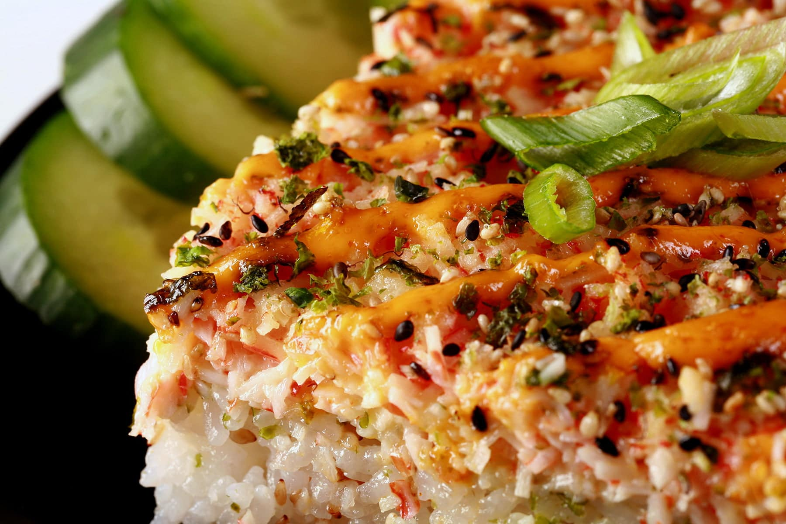

Sushi bake is a simple dish where most of the time is spent preparing the
ingredients before finally putting it all together. The dish is very customizable,
meaning you can change up the toppings to your liking.
The base of the dish starts
with the same ingredients every time. If you want to try adding your own toppings, go for it!
Sushi bake is a great dish to bring to parties and for anyone who enjoys sushi rolls
but wants it as a snack.
Note: to customize you can just add whatever toppings you like! A favorite of mine to recreate a Lion King Roll is to add pieces of cooked salmon, sliced avocado, and spicy mayo sauce along the top!
Back To Recipes Page